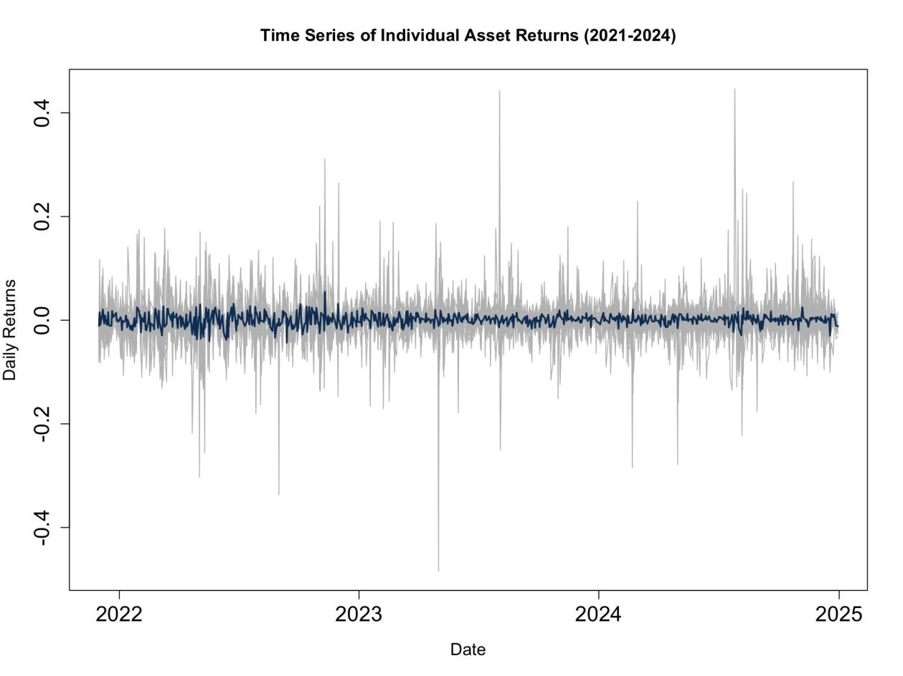
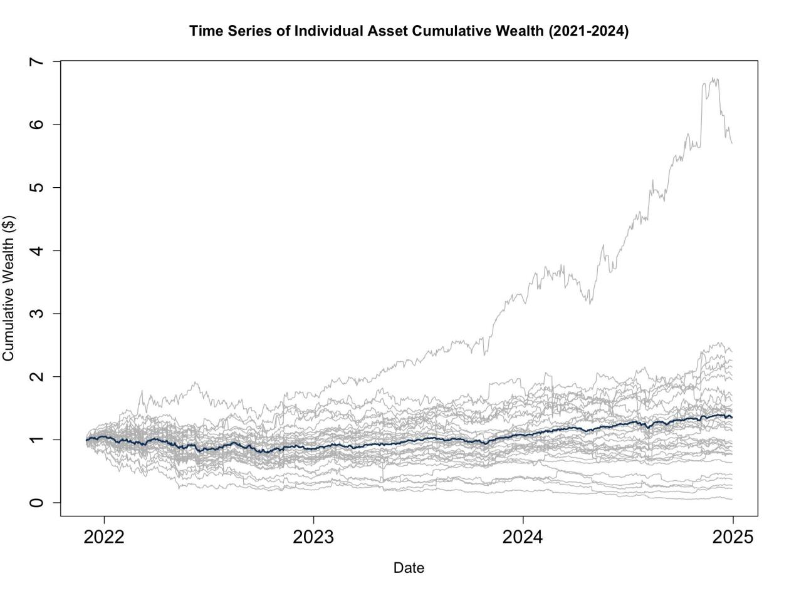

個別資產特性
報酬走勢、波動與左尾風險、相關係數熱圖：哪些資產可以互相分散風險。
- 2022 年各資產「齊跌」，2023 年起進入 AI 驅動期後出現「K 型分化」。
- AI 受災戶波動極大：CHGG 年化波動度 73.9%、FVRR 70.6%，約為 SPY 的四倍。
- 黃金、美債、農產品等與股票大盤的相關性很低，是分散風險的關鍵。
2.1 個別資產報酬率與累積財富走勢

所有資產的日報酬都圍繞零上下震盪，但大盤與個股差異明顯：SPY 的日報酬大致落在正負 0.05 之間；個別資產則頻繁出現極端突刺，例如 2023 年初有標的單日崩跌接近 -0.5，2023 年中與 2024 年下半年也有多次單日飆漲超過 0.4。這種波動聚集與厚尾特徵，反映個別公司面對高利率與 AI 變革時的定價脆弱，也說明透過資產配置消除「異質性風險」的必要。

累積財富走勢可以分成兩個階段：
- 2022 年「系統性收斂期」：聯準會激進升息，全體資產同步回撤，SPY 一度跌到 0.8 以下，資產之間差異很小。
- 2023 年起「生成式 AI 驅動期」：資產間報酬大幅分化。SPY 期末約 1.35（三年累計約 35%）；最強的資產期末達 6.7（累積報酬超過 570%）；位於變革逆風處的資產則只剩 0.1 至 0.2，本金幾乎歸零。
從「齊跌」轉為「K 型分化」，說明靜態等權重或只押單一資產，在產業洗牌時有很大的尾部風險，這是後續導入最佳化模型的動機。
2.2 敘述性統計
單位處理方式：最小值、四分位數、中位數與最大值保留日頻率原始數值，呈現真實發生過的單日極端損益；平均數與變異數乘以 252 年化，標準差依時間平方根法則年化；偏態與峰度依動差縮放定理校正；ACF1 為一階自我相關係數，用來檢查報酬是否有短期時間相依。
表 1：3 年期資產敘述性統計。點欄位名稱可以排序；滑鼠移到代號上可看公司名稱。數值以報告原始小數呈現，例如 Std 0.739 代表年化標準差 73.9%。
2.3 尾部風險與自我相關性
「AI 受災戶」的波動度大暴走
線上教育平台 Chegg（CHGG）年化波動度達 73.9%，外包平台 Fiverr（FVRR）達 70.6%，約為 SPY 的四倍。這反映市場對這類企業能否永續經營、未來現金流如何的看法劇烈分歧，買賣雙方難有定價共識，股價因此頻繁跳動。被動持有這類資產，要承擔很大的波動風險。
左尾風險
傳統理論常假設報酬服從常態分配，但多數資產有明顯的不對稱與厚尾。以 CHGG 為例，年化偏態 -0.108，代表虧損端的機率與幅度高於獲利端；再加上單日最大跌幅 -48.41%，具有單日大幅回撤的左尾風險。若不限制放空，模型在追求最小變異數時，容易因歷史共變異數的估計誤差給出異常權重，放大模型風險。
實體護城河與傳統避險資產較穩定
萬豪酒店（MAR）三年間年化標準差為 28.78%，顯示實體體驗需求有一定防禦力。黃金（GLD）年化標準差僅 14.12%，偏態（-0.004）與峰度（0.004）都接近零，接近常態分配。多數資產的 ACF(1) 介於 -0.02 至 -0.11，只有輕微的單日反轉，沒有顯著的趨勢相依，符合弱式效率市場的特徵。
AI 衝擊下，資產的報酬分配與風險特徵出現明顯分化。若只採等權重而不考慮個別資產的高波動與左尾風險，整體投資組合會承擔過高的下行風險。這是第 03、04 章導入最佳化模型的原因。
2.4 相關係數矩陣與風險分散潛力
依馬可維茲理論，降低組合波動的關鍵是挑選彼此相關性低的資產。下圖把報告表 2 至表 5 的 37 × 37 相關係數矩陣畫成熱圖，依五個群組排列。
表 2 至表 5：相關係數矩陣（共 37 × 37）。群組順序：AI 替代受災戶、智財權與護城河、深度偽造防禦者、人類真實體驗經濟、大盤與基準對照組。
查一查：和某檔資產相關性最低的 5 檔
三個觀察
- 科技大盤與 AI 受災戶走勢脫鉤：QQQ 與 CHGG 的相關係數只有 0.27。市場已把這類企業和整體科技股的漲勢分開看待。
- 傳統避險資產的保護作用：黃金（GLD）與長天期美債（TLT）和 SPY 的相關係數都很低（GLD 與 SPY 為 0.161，TLT 與 SPY 為 0.08）。加入這類低相關資產，能在股市下跌時提供緩衝。
- 實體體驗經濟的獨立性：精品（LVMUY）與 CHGG 的相關係數僅 0.193，實體護城河類股較不受 AI 技術變革干擾。
註：本頁相關係數數值一律依報告表 2 至表 5。
整體而言，37 檔資產的產業屬性差異很大，矩陣中有許多低相關與負相關的配對，為下一章用量化模型尋找最佳權重提供了良好的分散基礎。